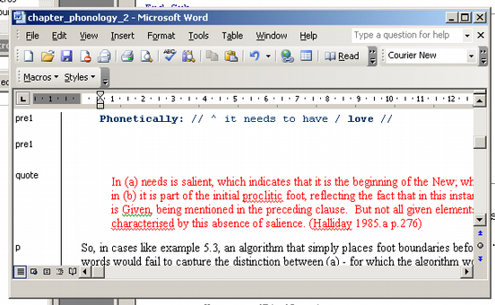

Adventures in self preservation: Converting legacy styles to ICE styles
2007-01-11
I'm going through the slow processof converting my theses to a long-term sustainable format and getting them on the internet. It's slow mainly because I'm doing this in my discretionary time. Some bits go quite fast, though, one of which is converting the styles I used way back then to shiny modern ICE styles.
Ever since I first opened up Word on the Mac – in about 1998 and had a poke around the menus, I've been telling everyone who'll listen to use styles.
To convert a document I open it in Word and attach the ICE temple:
-
Open the document in Word.
-
From Tools / Templates and Add in, Attach the ICE template.
The document text goes red! This is because ICE styles have special, short names with zero overlap with the styles most people are likely to use. The red is so you can see which bits of your document are still unstyled.
How to get rid of all the red?
In a well-styled document it's usually a matter of starting with some search and replace, going from one style to another. Word has a good macro language so my approach was to record the action of replacing one style with another, then hack the result to make a general purpose subroutine.
Sub replacestyle(fromStyle, toStyle)
Selection.Find.ClearFormatting
Selection.Find.Style = ActiveDocument.Styles(fromStyle)
Selection.Find.Replacement.ClearFormatting
Selection.Find.Replacement.Style = ActiveDocument.Styles(toStyle)
With Selection.Find
.Text = ""
.Replacement.Text = ""
.Forward = True
.Wrap = wdFindContinue
.Format = True
.MatchCase = False
.MatchWholeWord = False
.MatchWildcards = False
.MatchSoundsLike = False
.MatchAllWordForms = False
End With
Selection.Find.Execute Replace:=wdReplaceAll
End Sub
Then it's a matter of writing another macro to call it:
Sub replaceAllStyles()
Call replacestyle("Heading 1", "Title")
Call replacestyle("Heading 2", "h1")
Call replacestyle("Heading 3", "h2")
Call replacestyle("Heading 4", "h3")
Call replacestyle("Heading 5", "h4")
Call replacestyle("points", "li1i")
Call replacestyle("normal", "p")
Call replacestyle("normal minus", "p")
Call replacestyle("example", "pre1")
End Sub
So, I ran that on a chapter and it cleaned up nicely, to a point.
Here's a screenshot of the result:.

You can see the style names down the left hand side. The red text is in a style called quote. The ICE equivalent is bq1. So all I need to do is add a line to the conversion macro:
Call replacestyle("quote", "bq1")
I wrote some extra stuff to remove duplicated numbering from list styles. Total development time was maybe half an hour. As we work on more legacy documents on the ICE-RS project this very basic macro can grow; and we'll document the process.